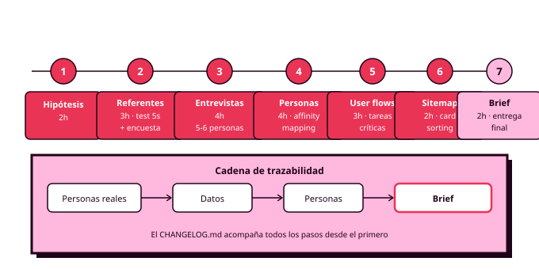

Órbita 1 — Conocer a las personas
Hoja de ruta (~20 horas)
Esta guía secuencia el trabajo de la órbita. Cada paso indica qué se hace, con qué herramienta, qué produce y cuántas horas orientativas ocupa. Los apartados de los apuntes desarrollan el cómo de cada paso.

Paso 1 — Definir la hipótesis de proyecto (2h)
Eliges el problema que tu producto va a resolver y lo formulas como hipótesis: "creo que las personas que [contexto] necesitan [objetivo] pero [fricción]". Abres el tablero de FigJam y el repositorio de GitHub con el CHANGELOG.md vacío. La hipótesis es provisional: los pasos siguientes la confirmarán, la matizarán o la desmontarán.
Produce: hipótesis escrita en el tablero + repositorio inicializado.
Paso 2 — Investigar el terreno (3h)
Analizas dos o tres productos de referencia que ya operan sobre el mismo problema. Aplicas el test de los cinco segundos con Lyssna sobre una pantalla de cada uno para saber qué comunican en una primera impresión, y tomas nota de su estructura, su vocabulario y sus fricciones. En paralelo lanzas una encuesta con Tally para detectar patrones y reclutar entrevistados.
Produce: notas de análisis de referentes + resultados del test de 5 segundos + encuesta lanzada.
Paso 3 — Entrevistar (4h)
Con las respuestas de la encuesta identificas perfiles y entrevistas a cinco o seis personas que encajen en ellos. Preguntas abiertas, foco en comportamiento real, registro de consentimiento y datos anonimizados. Las notas van al tablero de FigJam, una nota adhesiva por hallazgo.
Produce: notas de entrevista anonimizadas en FigJam.
Paso 4 — Sintetizar y construir las personas (4h)
Affinity mapping sobre todas las notas: agrupas hallazgos por afinidad y los grupos que emergen revelan los patrones. De ahí salen tus dos o tres personas —una con diversidad funcional—, cada una con su ficha: cita, contexto de uso, objetivos y frustraciones. Cada atributo debe poder rastrearse hasta un dato concreto. Si usas IA para la síntesis, primera entrada en el CHANGELOG.md.
Produce: fichas de personas en Figma, con jerarquía definida.
Paso 5 — Mapear los user flows (3h)
Identificas las tres a cinco tareas críticas del producto y mapeas su flujo en FigJam: happy path y al menos dos o tres casos límite por flujo. Recorres cada flujo con cada persona como filtro, especialmente la de diversidad funcional, y anotas las decisiones que quedan abiertas.
Produce: user flows de las tareas críticas con casos límite anotados.
Paso 6 — Card sorting y sitemap (2h)
Card sorting con cuatro o cinco compañeros. Con los agrupamientos resultantes y los flujos del paso anterior, construyes el sitemap: pantallas principales, secundarias y de sistema. Verificación cruzada: cada flujo crítico debe poder recorrerse sobre el sitemap en tres niveles o menos.
Produce: sitemap verificado contra los flujos.
Paso 7 — Cerrar el brief y entregar (2h)
Conviertes la hipótesis del paso 1 en brief definitivo: problema respaldado por datos, alcance acotado por las tareas críticas, personas referenciadas, criterios de éxito verificables y restricciones. Revisas que los cuatro artefactos estén vinculados al Figma del proyecto y que el CHANGELOG.md recoja todos los usos de IA de la órbita.
Produce: entregable completo de la Órbita 1 — brief, personas, user flows y sitemap.
Las horas suman 20 y son orientativas. Las fases de entrevista y síntesis son las que más varían según la disponibilidad de participantes. Conviene empezar a reclutar desde el primer día.